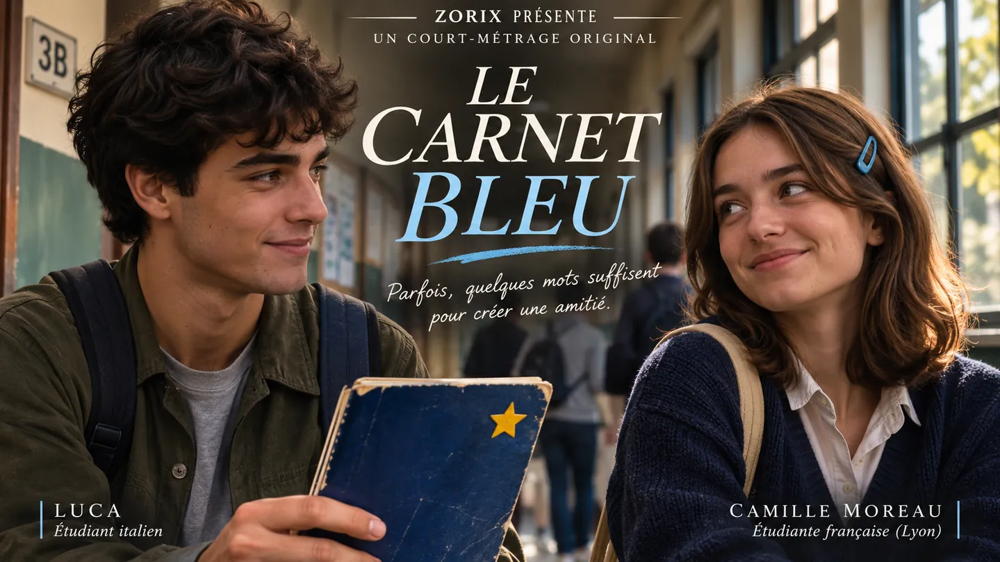

ZORIX ORIGINAL · COURT-MÉTRAGE EN FRANÇAIS
LE CARNET BLEU
Parfois, quelques mots suffisent pour créer une amitié.
Luca trouve un carnet bleu oublié à l'école. Quelques phrases en français le conduisent jusqu'à Camille, une nouvelle élève arrivée de Lyon. Une petite découverte devient le début d'une belle amitié.
Voir le court-métrage ▶
LE CARNET BLEULE FILM
Regarder LE CARNET BLEU
Si la vidéo n'est pas encore disponible, sa publication est en cours. Sous-titres et langue : français.
L'HISTOIRE
Un carnet. Deux élèves.
À la fin des cours, Luca découvre un carnet bleu sur un banc. Il y lit le nom de Camille Moreau, une étudiante française de Lyon. Une indication le mène à la bibliothèque de son lycée italien, où il rencontre Camille, qui se sent encore un peu seule dans sa nouvelle école.
En échangeant quelques mots de français, ils comprennent que la langue peut devenir un pont entre deux personnes.
«Alors, on peut apprendre ensemble.»